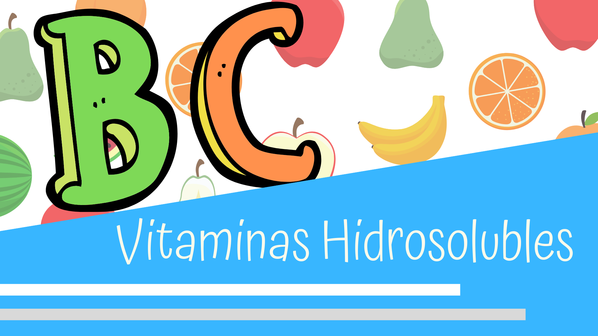

Vitaminas Liposolubles (A, D, E, K)
Se absorben junto con los lípidos en el intestino delgado, pueden almacenarse en hígado y tejidos grasos.
Vitamina A (Retinol)
- Funciones: Mantiene íntegros los epitelios, participa en la visión y desarrollo óseo.
- Fuentes: Leche, mantequilla, aceites, hígado, zanahoria.
- Deficiencia: Ceguera nocturna, xeroftalmia, mayor riesgo a infecciones.
Vitamina D (Calciferol)
- Funciones: Metabolismo de calcio y fósforo, crecimiento óseo.
- Fuentes: Aceites de pescado, mantequilla, síntesis por luz solar.
- Deficiencia: Raquitismo, osteomalacia.
Vitamina E (Tocoferol)
- Funciones: Antioxidante, protección celular.
- Fuentes: Yema de huevo, aceites vegetales.
- Deficiencia: Fragilidad en glóbulos rojos, distrofia muscular.
Vitamina K (Filoquinona)
- Funciones: Síntesis de protrombina (coagulación).
- Fuentes: Espinacas, lechuga, bacterias intestinales.
- Deficiencia: Disminuye la coagulación.
Vitaminas Hidrosolubles (Complejo B y C)
Se absorben con agua, no se almacenan y se eliminan por la orina.
Vitamina B1 (Tiamina)
- Funciones: Metabolismo de glúcidos.
- Fuentes: Carne, hígado, cereales, nueces.
- Deficiencia: Beriberi, fatiga, daños neurológicos.
Vitamina B2 (Riboflavina)
- Funciones: Metabolismo de carbohidratos y aminoácidos.
- Fuentes: Hígado, leche, huevos, verduras.
- Deficiencia: Inflamación de lengua, debilidad, dermatitis.
Vitamina B3 (Niacina)
- Funciones: Metabolismo celular y sistema nervioso.
- Fuentes: Carne, leche, levaduras, hígado.
- Deficiencia: Pelagra (dermatitis, diarrea, demencia).
Vitamina B6 (Piridoxina)
- Funciones: Metabolismo de proteínas y grasas.
- Fuentes: Hígado, cereales, huevos, vegetales.
- Deficiencia: Lesiones cutáneas.
Vitamina B9 (Ácido Fólico)
- Funciones: Síntesis de glóbulos rojos y ADN.
- Fuentes: Verduras verdes, bacterias intestinales.
- Deficiencia: Anemia macrocítica.
Vitamina B12 (Cianocobalamina)
- Funciones: Formación de glóbulos rojos, sistema nervioso.
- Fuentes: Carne, hígado, huevos, leche.
- Deficiencia: Anemia perniciosa, pérdida de memoria.
Vitamina C (Ácido Ascórbico)
- Funciones: Integridad capilar, cicatrización.
- Fuentes: Frutas cítricas, tomate, pimientos, verduras verdes.
- Deficiencia: Escorbuto, fragilidad capilar, pérdida de dientes.
